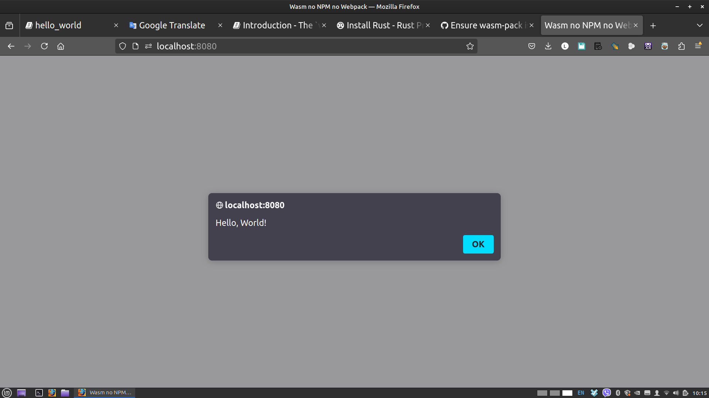

Hello, World!
This is the classic "Hello, world!" example. The original example comes from the [wasm-bindgen example]
The purpose of this first contact with wasm is to show you how to
- set up a project,
- export a Rust function to Js,
- call it from Js,
- and inversly call the Js alert function from Rust.*
It is assumed that you have installed Rust on your local machine
curl --proto '=https' --tlsv1.2 -sSf https://sh.rustup.rs | sh
or visit the official Rust install page
PART I. Make it run
Converting Examples in 7 steps
1. Set up your file structure
cargo new hello_world --lib
cd hello_world
mkdir -p www/html www/js
You should have this file structure
.
├── Cargo.toml
├── src
│ └── lib.rs
└── www
├── html
└── js
Throughout this Guide, we will keep rust code in src and frontend code in www
2. Edit Cargo.toml: Set the crate-type and add wasm-bindgen as a dependency.
In Cargo.toml, put crate-type = ["cdylib"] after edition entry.
And add wasm-bindgen as a dependency.
[package]
name = "hello_world"
version = "0.1.0"
edition = "2021"
[lib]
crate-type = ["cdylib"]
# See more keys and their definitions at https://doc.rust-lang.org/cargo/reference/manifest.html
[dependencies]
wasm-bindgen = "0.2.88"
Note:
wasm-bindgen-cli will be installed when we build with wasm-pack the first time.
(You don't need and should not install it yourself unless you are willing to manage versions for various dependencies.)
3. Get the lib.rs code for hello_world
To maintaint consistency with the original Examples and demonstrate the steps to convert to a nobundle version, we'll cut and paste and modify those examples whenever possible.
The point is to get used to convert code meant to be deployed with NPM-Webpack ecosystem into a play vanilla no-bundle Rust wasm code.
#![allow(unused)] fn main() { // src/lib.rs use wasm_bindgen::prelude::*; //This is using the alert function from Js #[wasm_bindgen] extern "C" { fn alert(s: &str); } //This Rust function will be called from Js #[wasm_bindgen] pub fn greet(name: &str) { alert(&format!("Hello, {}!", name)); } }
So in this contrived example we are going to call a Wasm function from Js that will call a Js function passing a value from Wasm to Js in the process.
4. Specify type module in index.html
Here is the first difference.
Our index file at www/html/index.html look like this:
<!DOCTYPE html>
<html>
<head>
<meta charset="UTF-8">
<title>Wasm no NPM no Webpack</title>
</head>
<body>
<script type="module" src="../js/index.js"></script>
</body>
</html>
Note the type="module"
5. import with file extension included and Wrap the code in async/await index.js
Second difference.
The js file js/index.js is modified to ES6 and look like this:
import init, { greet } from "../pkg/hello_world.js";
async function run() {
const wasm = await init();
greet('World');
}
run();
6. build with wasm-pack
In your root directory, at the same level as Cargo.toml, build the project.
wasm-pack build --target web --no-typescript --out-dir www/pkg
--target webto specify nobundle and generate Es6 glue code--no-typescriptwe are not using TypeScript for these examples--out-dir www/pkgby defaultpkgis at the same level as thesrcdirectory. Its cleaner to have all our web stuff inwww.
wasm-pack through wasm-bindgen-cli will generate the following in our pkg directory.
└── pkg
├── hello_world_bg.wasm # Wasm bytecode
├── hello_world.js # JavaScript module to import (ESM)
└── package.json
The output of --target web is included as an ES module.
Thats why we endup with an ES6 flavor of JavaScript.
7. Run the web server and open your browser
You can use any file server, or follow along with http which, in this Guide, we installed after wasm-pack.
You can host locally the www directory with http www.
It defaults at http://127.0.0.1:8000
You can pass the address and port number like this:
http -a 127.0.0.1 -p 8080 www
Specifying our directory www will expose the following file structure to our server
www
├── html
│ └── index.html
├── js
│ └── index.js
└── pkg
├── hello_world_bg.wasm
├── hello_world.js
└── package.json
Open index.html in a browser by pointing at [http://127.0.0.1:8080/html/]

Q&A
file structure?
.
├── Cargo.toml
├── src
│ └── lib.rs
└── www
├── html
└── js
cargo new hello_world --lib cd hello_world mkdir -p www/html www/js
--target web --no-typescript --out-dir www/pkg
- ` --target web` generate Es6 glue code. - `--no-typescript` We're not using Ts. - `--out-dir www/pkg` by default `pkg` is at the same level as the `src` directory and Cargo.toml file.
PART II. Understand the Code
The following is heavily indebted to MDN's Compiling from Rust to WebAssembly{target="_blank"}
Using wasm-bindgen to communicate between Rust and JavaScript
The lib.rs file
wasm-pack uses wasm-bindgen, to provide a bridge between the types of JavaScript and Rust.
It allows JavaScript to call a Rust API with a string, or a Rust function to catch a JavaScript exception.
"The src/lib.rs file is the root of the Rust crate that we are compiling to WebAssembly. It uses wasm-bindgen to interface with JavaScript.
In this example, it imports the window.alert JavaScript function, and exports the greet Rust function, which alerts a greeting message."
externtells Rust that we want to call some externally defined functions.#[wasm-bindgen]on top of it knows how to find these functions for us in JavaScript. in this case it will glue window.alert() from the browser's JavaScript to the Rust function header that provides us a function signature Rust can understand.
Whenever you want to call JavaScript functions, you can add them to this file in this manner, and wasm-bindgen takes care of setting everything up for you.
#![allow(unused)] fn main() { // src/lib.rs // To crate to communicate between Rust and JavaScript use wasm_bindgen::prelude::*; // Calling external functions in JavaScript from Rust #[wasm_bindgen] extern "C" { fn alert(s: &str); } // Producing Rust functions that JavaScript can call #[wasm_bindgen] pub fn greet(name: &str) { alert(&format!("Hello, {}!", name)); //call alert function we asked for in the extern block above } }
To expose public Rust function to the browsers' runtime and allow calls from JavaScript,
use the #[wasm_bindgen] attribute by placing it over the pub fn block.
#![allow(unused)] fn main() { // Producing Rust functions that JavaScript can call #[wasm_bindgen] pub fn greet(name: &str) { ... }
It's the opposite of extern. We are exposing greet to Javascript so it can be used in "*.js" files.
This function is named greet, and takes one argument, a string (written &str), name. It then calls the alert function we asked for in the extern block above.
We use the format! macro to concatenate two string-literal and convert in to a String slices &
So the alert in greet calls the alert in the extern block,
which is glued to window.alert in the browser runtime.
For the curious, have a look at [Design of wasm-bindgen]
index.html and index.js files
- index.html
import declarations in JavaScript can only be present in modules, so our html must specify that our index.js
file is a module.
<script type="module" src="../js/index.js"></script>
- index.js
As you recall, to specify that we are not using NPM and a bundler, we used `wasm-pack --target web to compile our code, Without NPM in mind. The build will produce ES6 code.
--out-dir www/pkg is used to have wasm-pack output its glue code in www/pkg
because its nice to have all non Rust related files in a specific place such as www.
We are not using typescript for our examples so --no-typescript will
prevent the production of *.ts files in pkg.
We must used ES module import syntax, since we are working with Es6 code.
Hence importing modules in our javascript files must come with its extension .js in our import statement:
import ... from "../pkg/hello_world.js";
Where did this hello_world from?
wasm-pack gets the name from our crate name as specified in Cargo.toml
[package]
name = "hello_world"
...
and produces its JavaScript glue code with the same name.
The import line
init()
There is an initialization function init which
will "boot" the module and make it ready to use.
We must import this provided default init function.
import init, ... from "../pkg/hello_world.js";
The init() function will load the .wasm binary that is in www/pkg
The exported Rust function
Next we import the greet function, which we made public in our Rust code
and accessible in our JavaScript with #[wasm_bindgen]
import init, {greet} from "../pkg/hello_world.js";
Running our code
Finally, we need to wrap the code in an async/await function.
Using async/await, greet will not be called until init() finishes loading the Wasm
that greet("World") needs to run.
Here again is the full listing:
import init, { greet } from "../pkg/hello_world.js";
async function run() {
const wasm = await init();
greet('World');
}
run();